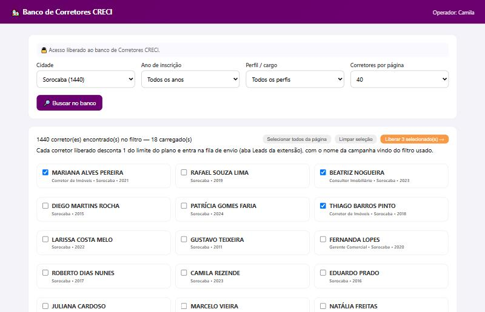
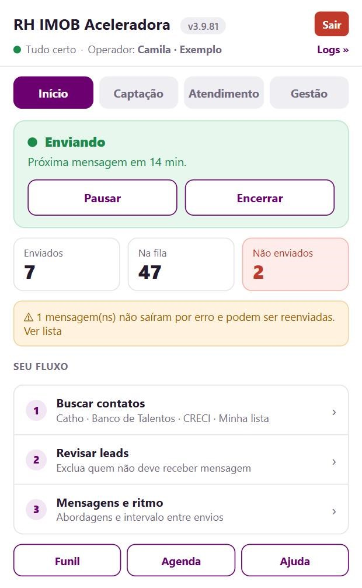
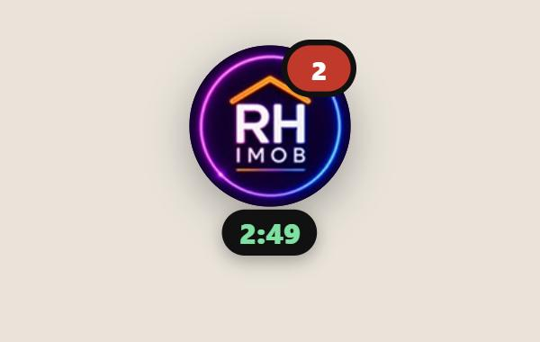
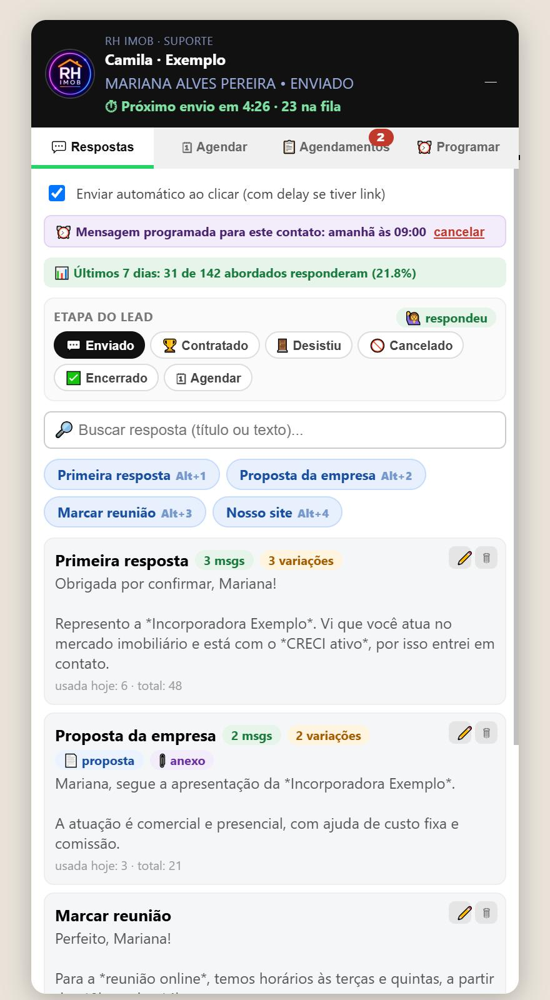
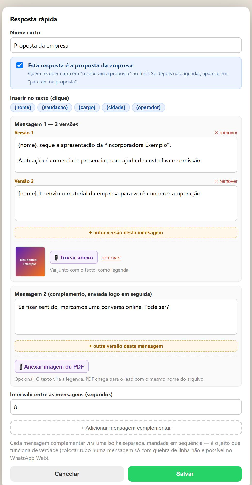
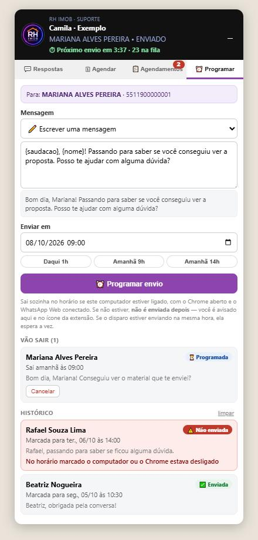
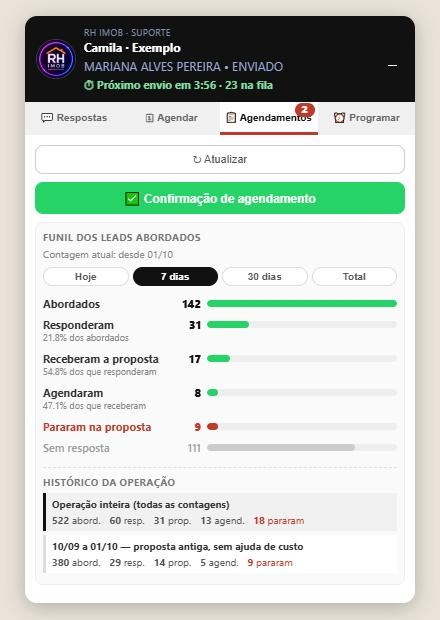
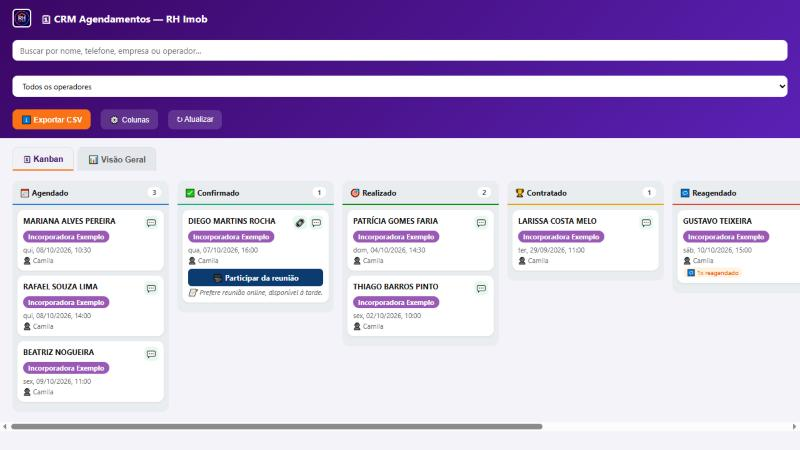
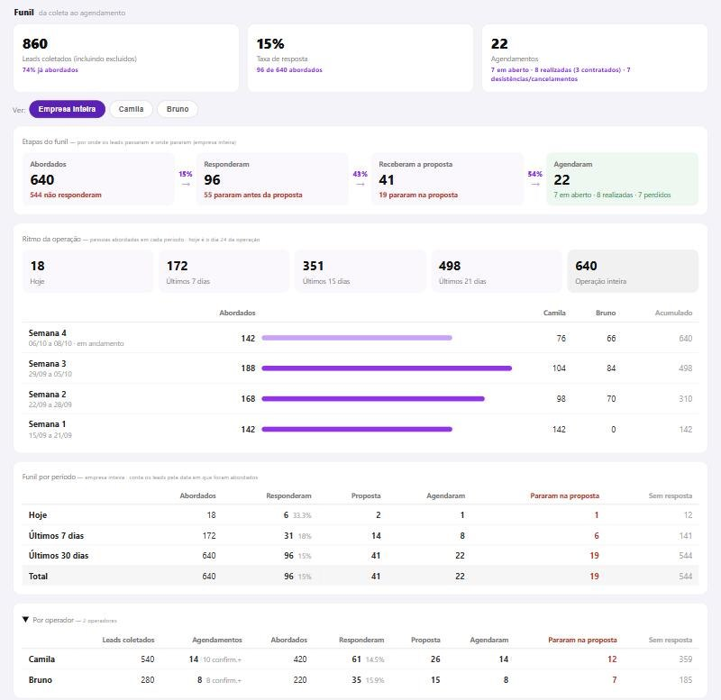

Do primeiro contato ao agendamento, numa ferramenta só
A RH IMOB Aceleradora encontra os contatos, faz a primeira abordagem no WhatsApp sozinha, ajuda você a conduzir a conversa com respostas prontas, agenda a reunião e mostra em números onde cada operação ganha e onde perde gente. Sem planilha e sem copiar e colar.
Captar
Busca currículos na Catho todo dia, libera contatos dos bancos da RH IMOB ou recebe a sua planilha.
Abordar
Envia a primeira mensagem para cada contato, com intervalo entre os envios e texto variado.
Conversar
Quando o lead responde, a bolha no WhatsApp coloca suas respostas prontas a um clique, com imagem ou PDF.
Medir
Conta sozinha quem respondeu, quem recebeu a proposta, quem agendou e quem parou no caminho.
00 O caminho do lead
Entender esta sequência ajuda a entender o resto do manual. Cada linha é uma etapa, e a ferramenta registra todas.
| Etapa | O que acontece | Quem faz |
|---|---|---|
| Coletado | O contato entra na sua base. | A extensão (ou você, ao liberar ou subir uma lista) |
| Abordado | Recebe a primeira mensagem. | A extensão, pelo disparo |
| Respondeu | Respondeu e você falou com ele. | Você, ao usar uma resposta da bolha |
| Recebeu a proposta | Você enviou a apresentação da empresa. | Você, ao usar a resposta marcada como proposta |
| Agendou | Marcou a reunião. | Você, pela aba Agendar |
Quem recebe a proposta e não agenda aparece em Pararam na proposta. Esse número mostra se o problema da operação está na abordagem (pouca gente responde) ou na proposta (respondem, mas não seguem).
01 Entrar e sair
O ícone da extensão fica na barra do Chrome. Tudo o que você coleta e envia fica registrado no seu login.
- Clique no ícone RH IMOB Aceleradora na barra de extensões do Chrome.
- Digite seu usuário e senha, cadastrados pelo administrador. Pode apertar Enter para entrar.
- Para conferir a senha, segure o ícone do olho. Ela aparece enquanto você segura e some ao soltar.
O que o login libera
Além da extensão, o login já abre o acesso ao Banco de Talentos e ao Banco de Corretores CRECI, se o administrador tiver vinculado esses acessos ao seu cadastro. Você não digita outra senha.
Sair para tudo. Ao clicar em Sair, a coleta em andamento é interrompida, o disparo para e a fila de envio é esvaziada. Nada continua rodando em seu nome. Se errar a senha 5 vezes, o login fica travado por 15 minutos.
02 Captação de contatos
São quatro fontes, todas na aba Captação. O contato que entra por qualquer uma delas vai para a mesma fila de envio.
Catho
Você cola o link de uma busca de currículos da Catho e define quantas páginas ela deve percorrer. A extensão abre cada perfil, lê nome, telefone, cargo, cidade e outros dados, e guarda tudo.
Automática
Roda sozinha todo dia, no horário definido pelo administrador para o seu login.
Manual
O botão Rodar coleta agora funciona a qualquer momento, para testar um filtro novo ou reforçar o dia.
Banco de Talentos
Base da RH IMOB com candidatos já mapeados. Você filtra por cidade, região, cargo, faixa etária e proximidade de metrô, seleciona quem interessa e libera o contato para a sua fila. O acesso e o limite de contatos são definidos pelo administrador.
Banco de Corretores CRECI
Base só com profissionais com CRECI ativo. Abra pela aba Corretores CRECI ↗. Você filtra por cidade, ano de inscrição e perfil, vê o nome de cada corretor e libera os selecionados. Ao liberar, o botão mostra o andamento ("Liberando 12 de 40") e o contato é descontado do limite do plano naquele momento.
Quem já foi liberado não aparece mais na busca e não é cobrado de novo. Se a liberação for interrompida no meio, é só buscar outra vez: os que faltaram continuam disponíveis.

Lista própria (planilha)
Se você já tem contatos fora dessas bases, a aba Base própria aceita uma planilha CSV. Baixe o modelo, preencha, suba, e os contatos entram na fila já organizados pelo nome da campanha.
O mesmo contato não entra duas vezes para o mesmo operador. Se já está na sua base, ele é atualizado.
03 Disparo automático
É a primeira mensagem para cada contato. Assim que a coleta termina, o disparo começa sozinho.

Na aba Envio você cadastra até 3 textos de abordagem. A extensão sorteia um para cada contato. Use {nome} para o primeiro nome e {saudacao} para "bom dia", "boa tarde" ou "boa noite" conforme a hora do envio.
Horário de funcionamento
| Quando | Horário |
|---|---|
| Início | entre 7h00 e 7h50 |
| Almoço | começa entre 12h00 e 12h30 e dura de 60 a 90 minutos |
| Fim (segunda a sexta) | entre 19h00 e 20h00 |
| Sábado | só de manhã, até o horário do almoço |
| Domingo | não envia |
Os horários exatos são sorteados a cada dia, de propósito, para o padrão não se repetir. O popup mostra a janela de hoje.
Intervalo entre os envios
| Intervalo | Quando usar |
|---|---|
| 6 a 10 min | Agressivo mais volume, mais risco de bloqueio |
| 10 a 15 min | Seguro recomendado no dia a dia (cerca de 50 abordagens num dia cheio) |
| 12 a 20 min | Aquecimento: número novo ou depois de um bloqueio |
O que a extensão cuida sozinha
- Não repete. Um número que já recebeu mensagem neste computador não recebe de novo, mesmo que o lead reapareça na base.
- Separa o que falhou. Envio que não saiu vai para a lista "Não enviados", com o motivo e um botão Reenviar. Ele não volta para a fila sozinho.
- Não perde tempo com número ruim. Se o número não tem WhatsApp, o próximo da fila sai em cerca de um minuto, sem esperar o intervalo inteiro.
- Para sozinha se o WhatsApp travar. Depois de 3 erros técnicos seguidos, ou se o WhatsApp desconectar, o disparo pausa e avisa.
- Retoma depois de reiniciar. Se o computador reiniciar no meio do dia, o disparo continua de onde parou.
O disparo usa a mesma aba do WhatsApp Web que você usa. Na hora de enviar, a tela muda para a conversa do lead. A bolha mostra quanto tempo falta para isso (veja o próximo capítulo). E nada funciona com o computador desligado ou o Chrome fechado.
04 A bolha no WhatsApp
É o painel com a logo da RH IMOB que aparece no WhatsApp Web. Você conduz a conversa inteira por ele, sem sair do chat.
Clique na logo para abrir ou fechar. Arraste pelo topo para mudar de lugar. Ao abrir uma conversa, a bolha identifica o contato e mostra o nome e a etapa dele.


Respostas
Seus textos prontos, a um clique, já com o nome do lead. Aceitam imagem e PDF.
Agendar
Marca a reunião do contato aberto. Nome e telefone já vêm preenchidos.
Agenda
O que pede ação hoje e todos os seus agendamentos, da entrevista mais próxima para a mais distante.
Programar
Deixa uma mensagem marcada para sair num dia e hora, para o contato aberto.
Funil
Os seus números: abordados, responderam, receberam a proposta e agendaram.
O que aparece no topo da bolha
- Nome e etapa do lead, quando o contato está na sua base.
- Contagem do próximo envio: "⏱ Próximo envio em 4:28 · 12 na fila". Nos últimos 30 segundos fica vermelha, avisando que a tela vai mudar. Com a bolha fechada, o tempo aparece embaixo da logo.
- Motivo da pausa, quando o disparo está parado: almoço, fora do horário, fim de semana ou WhatsApp desconectado, com a hora de volta.
- Aviso de agendamento existente, se aquele contato já foi agendado, mesmo que por outro operador.
Etapa com um clique
Na aba Respostas há uma linha de etapas, e ela é uma só:
- Contato sem agendamento: aparece Etapa do lead (Enviado, Contratado, Desistiu, Cancelado, Encerrado e o atalho Agendar), com um selo que diz se ele já respondeu ou já recebeu a proposta.
- Contato que está na sua agenda: aparece Etapa do agendamento, com as mesmas etapas do Kanban do painel (Agendado, Confirmado, Realizado, Presencial agendado, Contratado, Reagendado, Desistiu, Cancelado) e a data da entrevista.
Clicar muda a etapa na hora. Quando o lead já respondeu e ainda não recebeu a proposta, a resposta de proposta aparece destacada com uma estrela; quando já recebeu, o destaque passa para o botão Agendar.
Para hoje: o que precisa de você
No topo da aba Agenda fica o bloco Para hoje, com três listas:
- Atrasados, sem desfecho: a data da entrevista passou e o cartão continua em aberto.
- Entrevistas de hoje.
- Confirmar na véspera: as de amanhã que ainda não estão como Confirmado. Na sexta entram também as de sábado, domingo e segunda.
Cada linha tem um botão (Remarcar, Lembrar ou Confirmar) que abre a conversa do candidato com a mensagem já escrita. Você confere e envia. O número vermelho na aba Agenda e na bolha fechada é a soma dessas três listas.
Nenhuma dessas mensagens é fixa. No fim da aba Agenda, ✏️ Editar as mensagens da agenda abre os cinco textos (confirmação para o candidato, aviso para o responsável, confirmação de véspera, lembrete do dia e remarcação) para você escrever do seu jeito. Use as variáveis entre chaves, como {nome}, {dia}, {horario} e {link}; clicar numa variável a coloca no texto. A linha que usa uma variável sem valor, como o link numa entrevista presencial, não é enviada. Os textos ficam salvos neste computador.
Abrir a conversa de outro contato recarrega o WhatsApp Web por alguns segundos. Se o disparo estiver enviando ou prestes a enviar, a bolha pede para esperar um instante.
05 Respostas prontas
São os textos que você usa depois que o lead responde. Monte uma vez e use sempre.
Para criar ou editar, clique em + Nova resposta ou no lápis de uma resposta. Para enviar, clique no cartão, no botão pequeno acima da lista, ou use Alt + 1 a 9.

Combo de mensagens
Uma resposta pode ter até 3 mensagens, enviadas em sequência com o intervalo que você definir. Enquanto espera, o texto da próxima já fica na caixa de mensagem, então o lead vê "digitando" o tempo todo. Um aviso na tela mostra "mensagem 2 de 3" e tem botão Cancelar.
Variáveis
| Escreva | O lead recebe |
|---|---|
| {nome} | o primeiro nome dele |
| {saudacao} | bom dia, boa tarde ou boa noite, conforme a hora |
| {cargo} | o cargo, quando consta na base |
| {cidade} | a cidade, quando consta na base |
| {operador} | o seu primeiro nome |
Se o dado não existir para aquele lead, a frase que dependia dele é retirada e o resto da mensagem segue normal. Corretores CRECI quase nunca têm cargo cadastrado, então evite {cargo} nesse público.
Versões da mesma mensagem
Cada mensagem pode ter várias versões. Use + outra versão desta mensagem no editor. A cada envio sai uma delas, sem repetir a última, para o seu texto não ser sempre idêntico.
Imagem ou PDF
Cada mensagem pode levar um anexo: use 📎 Anexar imagem ou PDF no editor. O texto vai como legenda, numa mensagem só.
- Imagens grandes são reduzidas automaticamente.
- O PDF vai como está, com o mesmo nome do arquivo (limite de 8 MB). Dê um nome apresentável antes de anexar.
- O anexo fica guardado só neste computador. Em outro computador, é preciso anexar de novo.
- Se o anexo não entrar no WhatsApp, nada é enviado e a bolha avisa. O texto nunca sai sozinho sem o anexo.
A resposta de proposta
No editor há a opção "Esta resposta é a proposta da empresa". Marque na resposta que apresenta a empresa. Toda vez que você usá-la, o lead entra em "receberam a proposta" no funil.
Enviar automático
Com Enviar automático ao clicar desligado, a bolha só escreve a mensagem e você confere antes de enviar. Ligado, ela envia após uma contagem curta. Os combos de 2 ou 3 mensagens sempre enviam em sequência.
Os textos ficam salvos no seu login. Trocar de computador ou reinstalar a extensão traz tudo de volta. Para levar para outro login, use Exportar CSV e Importar CSV. O botão Restaurar padrão apaga as suas respostas e volta ao modelo inicial.
06 Mensagens programadas
Para retomar uma conversa depois: você deixa a mensagem marcada e ela sai sozinha no horário.
- Abra a conversa do contato e vá na aba ⏰ Programar.
- Escreva a mensagem ou escolha uma das suas respostas prontas. A prévia aparece já com o nome do lead.
- Escolha o dia e a hora. Há atalhos para "Daqui 1h", "Amanhã 9h" e "Amanhã 14h".
- Clique em Programar envio.

- Não disputa com o disparo. Se o disparo estiver enviando naquele instante, a programada espera a vez.
- Sai no horário marcado, mesmo fora da janela do disparo, inclusive à noite e no domingo.
- A saudação acompanha a hora do envio, e não a hora em que você programou.
- Lembrete na conversa. Ao abrir um contato que tem mensagem programada, a aba Respostas avisa e oferece cancelar. Útil se o lead responder antes da hora.
Se, no horário, o computador estiver desligado, o Chrome fechado ou o WhatsApp desconectado, a mensagem não é enviada depois. Ela fica marcada como "Não enviada" e você é avisado na bolha, no popup e no ícone da extensão. Mensagem programada leva só texto: imagem e PDF não vão junto. As programações ficam guardadas neste computador.
07 Funil e resultados
A ferramenta conta sozinha, a partir do que você faz no dia a dia. Você não preenche nada à parte.
Como cada número é contado
| Número | Entra quando |
|---|---|
| Abordados | a primeira mensagem do disparo sai |
| Responderam | você usa qualquer resposta da bolha com aquele lead |
| Receberam a proposta | você usa a resposta marcada como proposta da empresa |
| Agendaram | o lead é agendado |
| Pararam na proposta | recebeu a proposta e não agendou |
| Sem resposta | foi abordado e ainda não respondeu |
Uma etapa conquistada não é desfeita: quem respondeu continua contando como "respondeu" mesmo que depois desista. Quem agenda sai de "pararam na proposta" automaticamente.
Onde ver
- Na bolha, aba Funil: o funil do seu login, com botões para ver Hoje, 7 dias, 30 dias e Total.
- Na bolha, aba Respostas: uma faixa com o resumo dos últimos 7 dias.
- No painel de agendamentos (site), aba Visão Geral: a operação inteira da empresa, com todos os operadores. Veja Agendamentos e CRM.

Nova contagem
Quando a operação muda de fase (uma proposta nova, por exemplo), o administrador pode iniciar uma nova contagem para o operador. Os números voltam a zero e passam a contar só o que for abordado dali em diante. Nenhum lead ou conversa é apagado, e os números anteriores ficam guardados no Histórico da operação, junto com o total de tudo. Assim dá para comparar o antes e o depois.
Use as respostas da bolha ao conversar. Se você responder só digitando à mão, sem usar a bolha, aquele lead pode não entrar em "responderam". A contagem só vale para contatos que estão na sua base.
08 Agendamentos e CRM
Onde ficam as reuniões marcadas e a visão geral da operação.
Agendar pela bolha
Com a conversa aberta, vá na aba Agendar, preencha data, horário, empresa e link da reunião, e salve. O lead passa para a etapa Agendado. Se o contato já está na sua agenda, a aba mostra o agendamento dele para você alterar, em vez de um formulário em branco.
Na aba Agenda ficam todos os seus agendamentos, da entrevista mais próxima para a mais distante, com busca e os filtros "Em aberto" e "Todos". Clique num cartão para abrir e alterar etapa, data, link e observação. Cada cartão tem três botões:
- 💬 Abrir conversa: vai para a conversa do candidato.
- ✅ Confirmação: escreve na conversa dele a mensagem com dia, horário e link, para você conferir e enviar.
- 📨 Aviso p/ responsável: copia a mensagem para quem vai atender, com o nome e o WhatsApp do candidato, o dia, o horário e o link.
Kanban
O Kanban da extensão mostra todos os seus leads por etapa: Novo, Enviado, Respondeu, Sem interesse, Agendado, Contratado, Desistiu, Cancelado, Encerrado e Excluído. Arraste o cartão para mudar de etapa.
Painel de agendamentos (site)
Fica em rhimob.com.br/agendamentos e reúne os agendamentos de todos os operadores da empresa. Tem duas abas, Kanban e Visão Geral, e se atualiza sozinho a cada 45 segundos.
Aba Kanban
Uma coluna por etapa: Agendado, Confirmado, Realizado, Contratado, Reagendado, Desistiu e Cancelado. Cada cartão é um lead, com a data da entrevista, o operador e as observações. O selo vermelho Atrasado aparece quando a data da entrevista já passou e o cartão continua em Agendado, Confirmado ou Reagendado, ou seja, sem desfecho. É a lista de quem precisa de contato primeiro.

Aba Visão Geral
Mostra a operação da empresa em números, de cima para baixo. Cada número aparece em um lugar só.

| Bloco | O que mostra |
|---|---|
| Resumo | Leads coletados, taxa de resposta e total de agendamentos, com o desfecho: quantos estão em aberto, quantos foram realizados (e contratados) e quantos desistiram ou cancelaram. Avisa quando há entrevista com a data vencida e sem desfecho. |
| Etapas do funil | Abordados → Responderam → Receberam a proposta → Agendaram. A seta mostra quantos por cento avançaram; em vermelho, quantos pararam em cada etapa. |
| Ritmo da operação | Pessoas abordadas hoje, em 7, 15 e 21 dias e na operação inteira. Abaixo, semana a semana desde a primeira abordagem, com o acumulado. Serve para acompanhar operações de vários meses. |
| Funil por período | O mesmo funil para hoje, 7 dias, 30 dias e total, contando o lead pela data em que foi abordado. |
| Por operador | Uma linha por operador: leads coletados, agendamentos e o funil de cada um. As contagens anteriores aparecem logo abaixo do operador. |
| Agendamentos | Em que etapa estão (rosca), quando acontecem (últimos 30 dias; clique num dia para ver quem está agendado) e as entrevistas por entrevistador. |
| Melhores dias da semana | Em que dias as abordagens saíram e para que dias as entrevistas foram marcadas. |
Empresa com mais de um operador
A Visão Geral sempre soma todos os operadores da empresa. Para saber quem produziu o quê:
- Botões "Ver": acima das Etapas do funil, escolha Empresa inteira ou um operador. As etapas e o funil por período passam a mostrar só os números dele.
- Por operador: a tabela compara todos lado a lado.
- Ritmo da operação: a tabela semanal ganha uma coluna para cada operador.
Com um operador só, os botões "Ver" não aparecem e o bloco "Por operador" fica recolhido, porque repete o total.
Esse painel pede senha de administrador. Quem só acompanha os resultados usa o nível "agendamentos", que vê tudo, mas não altera a operação. O operador vê os próprios agendamentos pela bolha.
09 Proteção do número
O WhatsApp restringe números que mandam muita mensagem para quem não os conhece. A ferramenta trabalha para reduzir esse risco, mas ele nunca é zero.
O que a ferramenta faz
- Espera um intervalo entre os envios e nunca envia no mesmo instante em que escreve.
- Sorteia os horários do dia, o texto de abordagem e as versões das respostas.
- Não manda duas vezes para o mesmo número.
- Pausa sozinha se o WhatsApp travar ou desconectar.
O aviso de saúde do número
O popup mostra um aviso quando o padrão do dia fica arriscado:
| Situação | Aviso |
|---|---|
| Muitos números do dia sem WhatsApp (30% ou mais) | Risco pause e revise a lista |
| Muitos números sem WhatsApp na semana (20% ou mais) | Atenção a base precisa de limpeza |
| Muitos envios falhando por erro técnico | Atenção recarregue a aba do WhatsApp |
| 80 abordagens ou mais no dia | Atenção acima do ritmo normal |
| 120 abordagens ou mais no dia | Risco recomendado parar por hoje |
É só um aviso: nada é pausado por causa dele. A decisão é sua.
O que depende de você
- Prefira o intervalo Seguro. Deixe o Agressivo para quando precisar mesmo de volume.
- Número novo ou recém-desbloqueado: use o Aquecimento por alguns dias.
- Revise a lista antes de disparar. Tire contato errado e número duplicado.
- Se o WhatsApp mostrar algum aviso de restrição, pare o disparo. Insistir costuma transformar um aviso em bloqueio longo.
10 Rotina recomendada
Um dia típico com a ferramenta.
- De manhã: ligue o computador, abra o Chrome e deixe o WhatsApp Web conectado. O disparo começa sozinho entre 7h00 e 7h50. Abra a aba Agenda e resolva o bloco "Para hoje": remarque os atrasados e confirme as entrevistas de hoje e de amanhã.
- Ao longo do dia: responda quem respondeu, sempre pela bolha. Use a primeira resposta para quem confirmou o contato e a resposta de proposta para quem quer saber mais.
- Lead interessado: agende pela aba Agendar e envie a confirmação.
- Lead que pediu para falar depois: programe uma mensagem pela aba Programar.
- Fim do dia: atualize a etapa das entrevistas que aconteceram, olhe a aba Funil, a lista de "Não enviados" no popup e os avisos de mensagem programada.
- Uma vez por semana: compare "responderam" com "receberam a proposta" e "agendaram". É ali que aparece o que ajustar no texto.
Perguntas frequentes
Preciso clicar em algo todo dia para a coleta e o disparo funcionarem?
Não. Com o horário de coleta configurado pelo administrador, tudo roda sozinho, desde que o computador esteja ligado, o Chrome aberto e o WhatsApp Web conectado.
A tela do WhatsApp mudou sozinha enquanto eu digitava. O que houve?
Foi o disparo. Ele usa a mesma aba e, na hora de enviar, abre a conversa do lead. A contagem no topo da bolha mostra quanto falta para o próximo envio; nos últimos 30 segundos ela fica vermelha.
A bolha mostra o nome errado ou "Lead não encontrado na base".
"Não encontrado" significa que aquele contato não está na sua base; a bolha usa então o nome que o WhatsApp mostra, e as etapas do lead não aparecem. Se o nome estiver claramente errado, atualize a página do WhatsApp Web (F5).
A imagem ou o PDF não saiu.
Quando o anexo não entra no WhatsApp, a bolha avisa e não envia nada. Tente de novo. Se a bolha disser que o anexo não está neste computador, abra o lápis da resposta e anexe outra vez: anexos ficam guardados só no computador onde foram adicionados.
Programei uma mensagem e ela não foi enviada.
No horário marcado, o computador, o Chrome ou o WhatsApp não estava disponível. A mensagem não é reenviada sozinha. Abra a conversa e programe de novo, ou envie na hora.
O número de "responderam" está menor do que eu atendi.
Ele conta quando você usa uma resposta da bolha com um lead da sua base. Conversas respondidas só digitando à mão, ou pelo celular, podem ficar de fora. Abrir a conversa e usar uma resposta da bolha resolve.
Zeraram os números do meu funil. Perdi os dados?
Não. O administrador iniciou uma nova contagem. Os números anteriores estão no "Histórico da operação", na aba Funil da bolha, e nenhum lead foi apagado.
O que acontece se eu pausar o disparo?
Ele fica pausado até você clicar em Iniciar. A extensão não volta a enviar sozinha depois de uma pausa manual, mesmo que rode uma coleta nova.
Cliquei em Sair e depois entrei de novo. A fila sumiu.
É o esperado: sair esvazia a fila de envio, para nada continuar rodando sem ninguém logado. Os leads continuam na sua base. Ao clicar em Iniciar, a fila é montada de novo com quem ainda não foi abordado.
Apareceu "Tempo esgotado esperando o servidor".
A internet ou o servidor demorou mais de 30 segundos para responder. Confira a conexão e tente de novo. Nada é perdido: a ação simplesmente não foi concluída.
A aba Corretores CRECI ou o Banco de Talentos mostra "sem acesso".
O acesso precisa ser vinculado ao seu cadastro pelo administrador. Depois de vinculado, saia e entre de novo na extensão.
Posso usar no celular?
Não. A extensão funciona no Chrome do computador. O painel de agendamentos, no site, abre no celular para consulta.